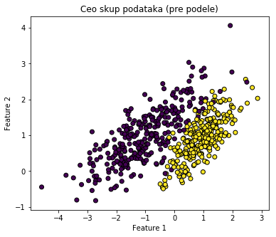
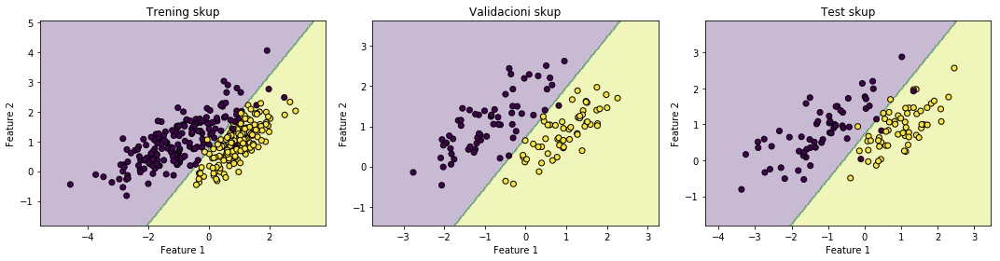
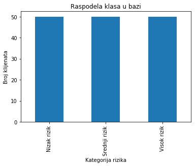
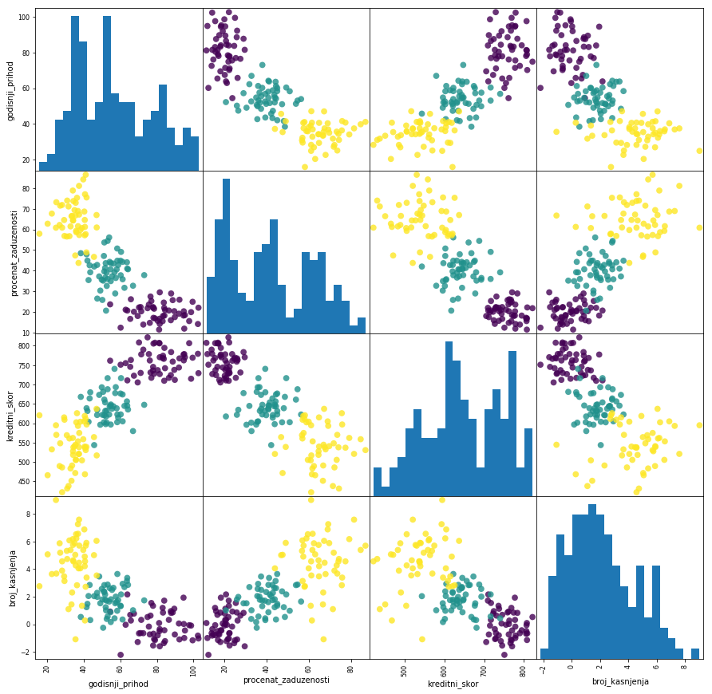
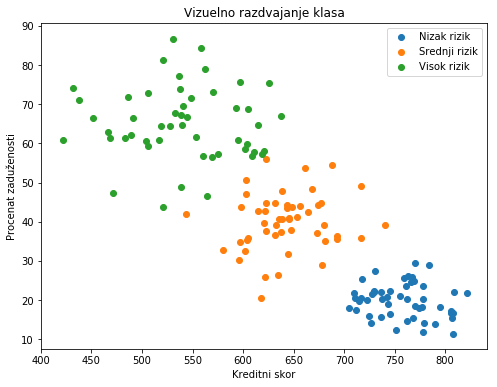
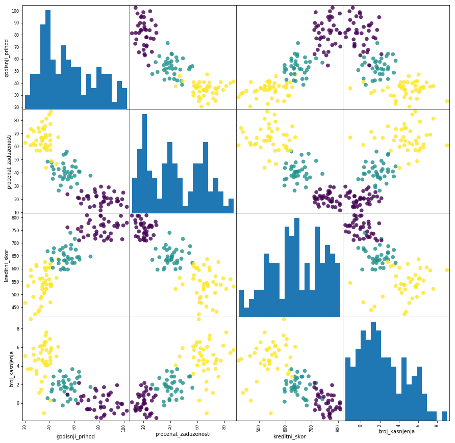
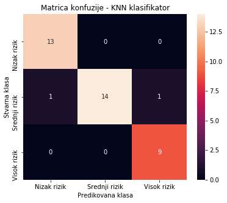

Uvod
Ciljevi
Upoznavanje sa pojmom i razvojem veštačke inteligencije.
Razumevanje osnovnog koncepta mašinskog učenja kao poddiscipline veštačke inteligencije.
Predstavljanje ključnih koncepata i terminologije iz oblasti veštačke inteligencije.
Upoznavanje sa osnovnim konceptima i pojmovima mašinskog učenja.
Upoznavanje sa polaznim idejama i fundamentalnim principima mašinskog učenja.
Upoznavanje sa najčešćim primenama veštačke inteligencije i mašinskog učenja u praksi.
Pregled glavnih pristupa u mašinskom učenju.
Identifikovanje osnovnih izazova i ograničenja u primeni modela mašinskog učenja.
Ishodi učenja
Po završetku ove nastavne jedinice student će biti sposoban da:
Definiše pojam veštačke inteligencije i objasni njen značaj u savremenom društvu.
Objasni šta je mašinsko učenje i kako se razlikuje od klasičnog programiranja.
Prepozna i pravilno koristi osnovne pojmove i terminologiju iz oblasti veštačke inteligencije i mašinskog učenja.
Opiše ključne ideje i principe na kojima se zasniva mašinsko učenje.
Navede i objasni najčešće oblasti primene veštačke inteligencije i mašinskog učenja.
Razlikuje glavne pristupe u mašinskom učenju (npr. nadgledano, nenadgledano i potkrepljujuće učenje).
Identifikuje osnovne izazove u razvoju i primeni modela mašinskog učenja.
Uvod u inteligentne sisteme i mašinsko učenje
U današnje vreme, skoro pa i neprimetno, korisnici digitalnih tehnologija svakodnevno komuniciraju sa inteligentnim sistemima koji donose odluke, pružaju preporuke i prilagođavaju se njihovim individualnim navikama kao neizostavni deo svakodnevice.
Nakon uspešnog dana na poslu želite da se opustite uz muziku, a telefon vam predlaže novu pesmu koja vam se već na prvo slušanje izuzetno dopada. Pametni sistem u pozadini, analizirajući vašu istoriju slušanja, omiljene žanrove i izvođače, sam zaključuje koja pesma ima najveću verovatnoću da vam se svidi, i to bez vaših dodatnih sugestija.
U nastavku putovanja sa posla, navigacioni sistem daje preporuku za najefikasniju putanju kako biste izbegli zastoj. U toku vožnje, automobil prepoznaje pešaka i automatski bezbednosni mehanizam aktivira kočnice, a vozilo usporava ili potpuno staje.
Savremeni primeri jasno pokazuju napredak inteligentnih sistema I koliko su ovakvi sistemi postali deo naše svakodnevice. Međutim, ideja da računari mogu donositi kompleksne odluke i nadmetati se sa ljudskim intelektom nije nastala preko noći. Jedan događaj s kraja XX veka simbolično je označio prekretnicu u razumevanju potencijala računara.
Događaj koji je nagovestio početak ere u kojoj računari aktivno kreiraju budućnost u mnogim oblastima.
Iako potiče iz davnina, bogata istorija šaha svedoči o njegovom značajnom uticaju na razvoj intelektualnih i kognitivnih sposobnosti pojedinaca, usavršavanje taktičkog i strateškog planiranja, kao i sposobnosti donošenja ispravnih odluka.
Da će u mnogim oblastima u budućnosti računari dominirati možda je nagovestio događaj koji se odigrao u Njujorku, u maju 1997. godine, kada je računar pobedio tadašnjeg svetskog šampiona u šahu Garija Kasparova. Ruski velemajstor Gari Kasparov poražen je u odlučujućoj partiji od računara Deep Blue kompanije IBM, pri čemu je jedan od inženjera kompanije, sedeći naspram šahovske table, povlačio poteze koje mu je sugerisao računar.
Ovaj događaj izazvao je veliku pažnju, iznenađenje i brojne komentare. Jedan televizijski komentator čak ga je nazvao „porazom čovečanstva“. Mnogi su taj meč označili kao tehnološki izazov i prekretnicu koja je otvorila novi put u budućnost nauke i svakodnevice. Za više informacija o ovom događaju i njegovom značaju za razvoj veštačke inteligencije, pogledajte ovde ili ovde.
Ovo su samo neki od brojnih primera prisutnosti mašinskog učenja u svakodnevnim aktivnostima. Dok su ranije računari uglavnom izvršavali instrukcije koje im je čovek zadavao, u poslednjim decenijama sve češće preuzimaju ulogu sistema koji samostalno stiču znanje, analiziraju podatke i izvode zaključke i rešenja na osnovu učenja iz empirijskih podataka.
Koje su mogućnosti i granice mašinskog učenja, i kako ih mi možemo iskoristiti za unapređenje našeg znanja?
Ovo poglavlje pruža uvod u ključne principe mašinskog učenja. Daje uvid u to kako se znanje može graditi iz podataka, kako se prepoznaju obrasci koji nisu uvek očigledni, i kako modeli greše, uče iz grešaka i postaju sve precizniji.
U savremenom okruženju, u kojem je tehnološki razvoj brži nego ikada ranije i gde se svet neprestano menja, mašinsko učenje postaje izuzetno značajno u okviru tehnološke revolucije koja sve više oblikuje našu svakodnevicu. Mašinsko učenje omogućava računarima da samostalno uče iz dostupnih podataka i da, bez eksplicitnog programiranja, rešavaju zadatke i donose odluke.
Sa sve većim količinama podataka koje postaju dostupne u svakodnevnim aktivnostima, opravdano je očekivati da će analiza podataka biti sve prisutnija i neophodnija, ne samo u nauci već i u širokom spektru profesionalnih i svakodnevnih zadataka.
Napomena
U ovom poglavlju razmatraju se osnovni i ključni pojmovi koji su značajni za razumevanje principa, metoda i načina rada mašinskog učenja. Pre nego što nastavite dalje sa čitanjem ostatka knjige, potrudite se da jasno shvatite osnovne koncepte i pojmove.
Veštačka inteligencija (engl. Artificial Intelligence, AI) predstavlja oblast računarstva koja se bavi razvojem sposobnosti mašina da oponašaju ljudsku inteligenciju i način razmišljanja, uključujući učenje, zaključivanje, donošenje odluka, rešavanje problema, itd. Usled mogućnosti efikasne obrade velikih skupova podataka sistemi veštačke inteligencije mogu vremenom unapređivati svoje performanse, ali i generisati novi sadržaj zasnovan na naučenim pravilnostima. Veštačka inteligencija ima za cilj razvoj računarskih sistema koji, zahvaljujući svojoj sposobnosti da brzo obrađuju velike količine podataka, mogu efikasno rešavati kompleksne zadatke, u nekim slučajevima premašujući i ljudske kognitivne sposobnosti.
Koncept veštačke inteligencije vuče korene iz XX veka, kada su postavljene ključne teorijske i praktične osnove za njen razvoj, povezane sa imenima Alana Tjuring, Džona Mekartija i drugih pionira. Zanimljivo je da je Turing još u svom pionirskom radu iz 1950. godine ukazao da učenje treba da bude ključni element svakog inteligentnog sistema: „Umesto da pokušamo da napravimo program koji simulira um odraslog čoveka, zašto ne bismo radije pokušali da napravimo onaj koji simulira um deteta? Ako bi taj program zatim bio podvrgnut odgovarajućem kursu obuke, dobili bismo mozak odraslog čoveka.” Alan Tjuring (engl. Alan Mathison Turing) bio matematičar, logičar i kriptograf, ali i vizionar koji je mašine posmatrao kao entitete sposobne za učenje. U radu [1] postavio je čuveno pitanje „Mogu li mašine da misle?“ i predložio koncept danas poznat kao Tjuringov test, kao operativni pristup proceni inteligencije mašina kroz komunikaciju, umesto kroz formalno definisanje inteligencije. Pored teorijskih osnova, Tjuring je postavio i praktične temelje oblasti. Razvio je prvi šahovski algoritam koji je, usled nedostatka računarske snage, samostalno simulirao (trošeći 30 minuta po potezu). Njegov vizionarski pristup sugerisao je da put ka veštačkoj inteligenciji vodi preko modela koji ’uče’: smatrao je da je lakše dizajnirati bazični program nalik dečijem umu i zatim ga postepeno edukovati, nego manuelno kodirati vrhunsku kognitivnu kompleksnost. Kao čovek koji je ’kumovao’ oblasti davši joj ime Artificial Intelligence, Džon Mekarti (engl. John McCarthy) je postavio pravce razvoja moderne nauke, [2]. Autor je programskog jezika Lisp, nezaobilaznog alata u ranom razvoju inteligentnih sistema, i vatreni zagovornik korišćenja logike kao primarnog sredstva za mašinsko zaključivanje. Pored nabrojanog, Mekarti je predvideo budućnost računarstva kroz koncept deljenja resursa (time-sharing), postavljajući time rane temelje za današnju cloud infrastrukturu. U poslednjim godinama veštačka inteligencija dobija sve veću popularnost i dinamičan razvoj, uz sve širu primenu u naučnim istraživanjima i svakodnevnom životu, predstavljajući osnovu mnogih savremenih funkcija, aplikacija i tehnologija koje svakodnevno koristimo.
Mašinsko učenje (engl. Machine learning, ML) je podgrana veštačke inteligencije, koje je kao disciplina proizašlo iz sinergije više različitih naučnih oblasti, prvenstveno statistike, računarstva i neuronauke, ali i optimizacije, teorije odlučivanja i teorije igara. Mašinsko učenje predstavlja oblast računarstva koja se bavi razvojem algoritama sposobnih da prepoznaju obrasce u podacima i uče iz njih, radi donošenja odluka zasnovanih na samim podacima. Početkom XXI veka, došlo je do značajnog unapređenja u razvoju veštačke inteligencije zahvaljujući razvoju novih tehnologija, pre svega napretku u računarskom hardveru, koji je omogućio veću brzinu obrade, veći kapacitet memorije i sposobnost da se obrađuju, skladište i analiziraju znatno veće količine podataka. Mašinsko učenje omogućava upravljanje složenim sistemima i automatsko učenje iz podataka, čime prevazilazi ograničenja tradicionalnih metoda i nadmašuje ljudske sposobnosti u određenim oblastima u kojima su do skoro računari bili manje uspešni u poređenju sa ljudima.
Dok čovek stiče znanja i veštine kroz direktno, lično iskustvo, uključujući emocionalne i kontekstualne dimenzije, modeli mašinskog učenja uče isključivo iz analize ogromnih skupova podataka. Pogledajte ilustraciju na slici koja prikazuje ovu razliku.

Slika 19. Mašinsko učenje iskustvo (Izvor: bigdata.black, ili https://dwbimaster.com/what-is-machine-learning/ )
Tom Mišel (engl. Tom M. Mitchell) u svojoj knjizi („Machine Learning”, 1997) dao je jednu od najpoznatijih definicija pojma mašinskog učenja, koja glasi: „Kažemo da računski program uči iz iskustva E u odnosu na skup zadataka T i meru performansi P ako se njegovo izvođenje zadataka iz T, merеnо pomoću P, poboljšava sa iskustvom E.” (engl. „A computer program is said to learn from experience E with respect to some class of tasks T and performance measure P, if its performance at tasks in T, as measured by P, improves with experience E.”), gde je:
T – zadatak (jedan ili više) za koji se program obučava;
E – iskustvo, tj. skup podataka iz kojih program uči;
P – mera učinka, tj. mera performanse progresa u učenju.
Ilustrovano na primeru, Mitchellova definicija se može razumeti na sledeći način: zadatak (T) je da program prepozna da li je nova e-pošta neželjena (engl. spam) ili legitimna (engl. ham) poruka. Iskustvo (E) predstavlja obuku na velikom broju prethodno klasifikovanih mejlova kao neželjena ili legitimna pošta. Mera performansi (P) najčešće je tačnost (engl. accuracy) koja predstavlja procenat ukupno ispravno klasifikovanih primera na testu. Ako model vremenom postiže sve bolju tačnost P kako dobija više označenih primera E (označenih mejlova), možemo reći da uspešno uči da obavlja svoj zadatak klasifikacije T. Drugi primer bi mogao da bude sledeći: zadatak (T) podrazumeva igranje šaha, gde je cilj da sistem nauči kako da donosi optimalne poteze u različitim pozicijama na tabli. Mera performansi (P) izražava se kroz procenat dobijenih partija protiv različitih protivnika i služi za procenu uspešnosti naučenih strategija. Iskustvo učenja (E) ogleda se u velikom broju trening-partija, pri čemu kroz ponavljanje i analizu ishoda unapređuje svoje odluke i postaje sve uspešniji.
Jedno od prvih pominjanja termina mašinsko učenje datira iz 1959. godine, kada je Artur Samjuel (engl. Arthur Samuel), tokom svog istraživačkog rada na računarskom programu za igru dama, uočio da se performanse programa poboljšavaju kroz iskustvo, pa je to zapažanje formulisao u definiciju mašinskog učenja: „Mašinsko učenje je oblast koja računarima daje sposobnost da uče bez eksplicitnog programiranja.“
Prema autoru Marfiju ([3], strana xxvii), „cilj mašinskog učenja je da razvije metode koje mogu automatski detektovati obrasce u podacima, a zatim da koriste otkrivene obrasce za predviđanje budućih podataka ili drugih ishoda od interesa.”
Algoritmi mašinskog učenja postaju zastupljeni u različitim industrijama i menjaju način poslovanja i organizacije sistema. Revoluciju pokreću revolucionarni napredak u algoritmima i sve veća dostupnost podataka što rezultira eksponencijalni napredak algoritama mašinskog učenja, kao i intenzivnu ekspanziju primene u različitim domenima.
Mašinsko učenje ima širok dijapazon primene u različitim oblastima, obuhvatajući nauku, industriju i svakodnevne aktivnosti. Neki od primera delatnosti i aktivnosti u kojima se modeli mašinskog učenja uspešno primenjuju:
Prepoznavanje objekata i identifikaciju lica na fotografijama i video zapisima, kao i obrada govora i razumevanje prirodnog jezika (na primer, u interakciji sa digitalnim asistentima poput Siri ili Alexa).
Upravljanje autonomnim sistemima: modeli za razvoj autonomnih vozila.
Medicinska dijagnostika.
Klasifikacija elektronske pošte i vesti.
Analiza sentimenta.
Kreiranje efikasnih sistema za preporuke sadržaja ili proizvoda (kao što su predlozi za gledanje na platformama za striming).
Ekonomsko prognoziranje trendova na tržištu, analizu finansija i razumevanje ponašanja korisnika i kupaca.
U suštini, mašinsko učenje radi sve što uključuje pronaženje skrivenih obrazaca u velikim količinama podataka, a lista primena se širi svakog dana. U svetu gde brzina i preciznost informacija mogu odlučiti o uspehu, mašinsko učenje postaje ključni saveznik kompanijama, institucijama, kao i pojedincima u poslovnim aktivnostima.
Zašto mašinsko učenje?
Postoji nekoliko činjenica koje opravdavaju potrebu za dublje interesovanje za mašinsko učenje i značaj bavljenja ovom temom.
U eri eksplozije podataka, svaka naša digitalna akcija ostavlja trag sa potencijalno vrednim informacijama. Zbog ogromnog obima i izuzetne brzine generisanja podataka, postaje jasno da su neophodni novi pristupi njihovoj analizi, pre svega sistemi mašinskog učenja koji mogu efikasno da prepoznaju skrivene obrasce i donose zaključke zasnovane na algoritamskom rasuđivanju. U tako masivnim skupovima podataka algoritmi imaju ključnu ulogu, jer omogućavaju otkrivanje veza i korelacija između različitih varijabli ili događaja koje na prvi pogled nisu očigledne.
Umesto unapred eksplicitno definisanih pravila, algoritam uči direktno iz podataka, prilagođava se novim i različitim situacijama, a sa porastom količine dostupnih podataka njegova preciznost i upotrebna vrednost se dodatno povećavaju.
Postoje klase problema koje je teško rešiti jer, iako su ulazni i izlazni podaci jasno definisani, pravilo koje povezuje pojedinačne ulazne instance sa odgovarajućim izlaznim vrednostima nije lako uočljivo. U takvim situacijama cilj je da mašine samostalno identifikuju tu vezu među podacima, čime se omogućava donošenje pouzdanih predviđanja i za nove, prethodno neviđene podatke.
Mašinsko učenje omogućava sistemima da koriste nove informacije i prilagođavaju se, pri čemu se njihove performanse poboljšavaju sa povećanjem količine podataka, što omogućava automatsku i bržu analizu.
Veštačka inteligencija, mašinsko učenje, duboko učenja, u čemu je razlika?
Iako su veštačka inteligencija, mašinsko učenje, duboko učenje i neuronske mreže usko povezane tehnologije, ovi termini se nekada upotrebljavaju kao sinonimi, što izaziva zabunu oko njihovih razlike zbog pogrešnog poistovećivanja. Slika ispod daje pregled hijerarhijskog odnosa između pojmova: veštačka inteligencija je najširi skup, mašinsko učenje je podskup veštačke inteligencije, dalje dubinsko učenje je podskup mašinskog učenja, a neuronske mreže čine okosnicu algoritama dubokog učenja.
Veštačka inteligencija (VI) obuhvata sisteme i mašine projektovane da oponašaju ljudsku inteligenciju i izvršavaju kognitivne funkcije. Mašinsko učenje predstavlja poddisciplinsku oblast veštačke inteligencije koja se bavi razvojem algoritama i modela za učenje iz podataka, pri čemu računari ne dobijaju eksplicitne instrukcije za svaki korak, već samostalno uče iz iskustva i vremenom poboljšavaju svoje performanse u obavljanju zadataka. Duboko učenje predstavlja podskup mašinskog učenja i razlikuje se od njega po načinu na koji algoritmi uče i količini podataka koju koriste. Duboko učenje podrazumeva upotrebu struktura sa više skrivenih slojeva da bi se automatski izvlačile karakteristike direktno iz sirovih podataka.

Slika 20. Mašinsko učenje i iskustvo(Izvor: https://rachana3073.medium.com/deep-learning-48a77b25615a)
Veštačka inteligencija je značajno promenila industrije, donoseći napredak u tehnologiji, nauci i svakodnevnom životu. Na osnovu svojih sposobnosti i funkcionalnosti, može se svrstati u tri osnovne kategorije: uska ili slaba veštačka inteligencija (engl. Artificial Narrow Intelligence, ANI), opšta ili jaka veštačka inteligencija (engl. Artificial General Intelligence, AGI) i superinteligentna veštačka inteligencija (engl. Artificial Superintelligence, ASI).
Sistemi slabe veštačke inteligencije specijalizovani su za uspešno izvršavanje jasno definisanih zadataka, pri čemu su njihove mogućnosti ograničene na domen za koji su razvijeni. Većina savremenih aplikacija koje svakodnevno koristimo zasniva se upravo na ovom tipu inteligencije. Ona stoji iza GPS mapa, sistema za preporuku na platformama za striming, virtuelnih asistenata (npr. Siri, Alexa), sistema za prepoznavanje lica, automatizovanog prevođenja, kao i naprednih sistema poput autonomnih vozila.
Jaka veštačka inteligencija predstavlja hipotetički nivo razvoja pri kojem bi sistem bio sposoban za apstraktno razmišljanje i simulaciju opštih kognitivnih sposobnosti. U tom smislu, opšta veštačka inteligencija podrazumevala bi sposobnost mašine da obavlja zadatke na nivou čoveka, dok bi superinteligencija prevazišla ljudske intelektualne kapacitete. Ipak, opšta i superinteligentna veštačka inteligencija za sada postoje isključivo u teoriji i predmet su intenzivnih istraživanja, predstavljajući još uvek nedostižan cilj savremene nauke o računarstvu.
Razumevanje ključne terminologije mašinskog učenja
Mašinsko učenje predstavlja metodu za transformaciju sirovih podataka u korisno znanje. U ovom delu definisaćemo ključne pojmove neophodne za dalje razumevanje i primenu obrađenih koncepata.
Algoritam je set pravila ili postupak koja se koristi za kreiranje modela iz ulaznih podataka, tj. niz pravila koja se primenjuju na skup podataka za obuku u cilju učenja obrazaca, analize podataka i dolaska do rešenja. Model je rezultat učenja algoritma iz podataka, i predstavlja naučenu matematičku strukturu koja prepoznaje obrasce i odnose u ulaznim podacima. Nakon obuke, model je spreman da samostalno donosi predikcije ili klasifikacije na nepoznatim ulaznim podacima. Na primer, model koji je treniran na istorijskim cenama nekretnina može, na osnovu informacija o novoj nekretnini poput lokacije, kvadrature i starosti, proceniti njenu vrednost.
Baza podataka (engl. dataset) je osnovna kolekcija informacija koja služi za obuku modela mašinskog učenja. U takvom skupu, ulazni podaci se sastoje od \(N\) pojedinačnih instanci (observacija) (\(s^{(1)}\) do \(s^{(N)}\)), gde svaka instanca predstavlja konkretan primer za učenje. Svaku observaciju opisuju karakteristike (engl. features), iz kojih model uči da prepozna obrasce i donosi predviđanja. Ove karakteristike predstavljaju atribute posmatranih opservacija koje obično označavamo kao \(x_1, x_2, \dots, x_n\). One mogu biti numeričke vrednosti (npr. cena, temperatura, kilogrami), kategorijski podaci (npr. oblik, boja), tekstualne karakteristike (modeli ih koriste nakon transformacije u numerički format) ili vremenske karakteristike (npr. datum, vreme). Karakteristike predstavljaju ulazne podatke (engl. input) za model, stoga su njihov kvalitet i relevantnost ključni faktori za performanse. Ove instance daju ulaz algoritmu, a njihov željeni izlaz ili kategorija (označena sa \(y\) u poslednjoj koloni) služi kao referenca za učenje. U obeleženim podacima, željeni izlaz uzorka naziva se oznaka (engl. label). Obuka (engl. training) je proces kreiranja modela mašinskog učenja iz postojećih podataka. Nakon obuke, model sprovodi zaključivanje (engl. inference) i primenjuje naučene obrasce da bi efikasno predvideo ishode novih, nepoznatih ulaznih podataka. Nakon obuke i validicije na nepoznatim podacima, model se integriše u realno, operativno okruženje ili aplikaciju kako bi aktivno donosio odluke i predviđao ishode u realnom vremenu, dakle sledi faza puštanja u rad (engl. deployment), čime se ostvaruje finalna realizacija modela.
Rezultati modela su direktno uslovljeni kvalitetom ulaznih podataka, jer nerelevantne ulazne karakteristike ograničavaju potencijal učenja i dovodi do netačnih predikcija. Veoma važan proces je kreiranje karakteristika (engl. feature engineering) čiji je cilj transformacije sirovih podataka u skup korisnih karakteristika (atributa) kako bi se generisale nove, informativne i smislene karakteristika iz sirovih podataka koje su informativne za proces učenja i poboljšavaju sposobnost modela da efikasno uči i generalizuje.
Obuka algoritma se sprovodi na trening skupu koji predstavlja osnovni skup podataka (iskustva) iz kojeg algoritam uči i obuhvata najveći deo podataka (obično 60% do 80%). Samim tim, ovaj skup ima presudan uticaj na uspešnost celog procesa učenja. U samom procesu treniranja, model obrađuje podatke kako bi stekao uvid u relevantne obrasce i naučio da predviđa ciljnu vrednost. Posmatrajući različite primere podataka iz trening skupa, model uči koje su karakteristike važne. Validacioni skup (obično 10% do 20%) se koristi nakon treniranja modela, sa ciljem poboljšanja njegovih performansi. To je poseban deo podataka koji se ne koristi za učenje, već za fino podešavanje hiperparametara modela tokom faze obuke, kako bi se pronašla optimalna konfiguracija modela. Model se trenira sa različitim kombinacijama hiperparametara, a zatim se porede rezultati na validacionom skupu. Tako se bira ona kombinacija koja daje najbolje rezultate. Proces validacije služi kao prelazna faza nakon procesa učenja, koji se vrši na trening skupu, i pre nego što model ide na završni ispit, koji se vrši na skupu za testiranje. Validacija performansi podrazumeva da se obučeni model pusti da predvidi rezultate za primere iz testnog skupa, a zatim se ta predviđanja uporede sa njihovim stvarnim, već poznatim vrednostima. Model ne uči iz validacionih podataka, već se trenira sa različitim kombinacijama hiperparametara, nakon čega se mere performanse svake kombinacije. Test skup (preostalih 10% do 20%) je deo podataka koji služi za objektivnu i konačnu evaluaciju performansi modela na neviđenim podacima. Ovaj skup pruža ključnu procenu performansi modela u realnim uslovima, odnosno njegove uspešnosti na podacima koje ranije nije video. Test skup predstavlja potpuno nezavisan skup podataka koji je odvojen od trening i validacionog skupa.
Matematička notacija: Zašto koristimo X i y?
U mašinskom učenju se oslanjamo na standardnu matematičku konvenciju \(f(X) = y\), gde su podaci ulaz u funkciju, a oznake izlaz. Prilikom pisanja koda, važno je poštovati sledeća pravila:
Veliko X – koristi se jer su podaci dvodimenzionalni niz, odnosno matrica koja sadrži sve karakteristike (features).
Malo y – koristi se jer su ciljne oznake jednodimenzionalni niz, odnosno vektor koji sadrži oznake.
Prikaz podele na trening, validacioni i test skup
U cilju boljeg razumevanja procesa izgradnje i evaluacije modela mašinskog učenja, prikazaćemo kako se skup podataka deli na trening, validacioni i test skup, kao i koja je uloga svakog od njih. Najpre ćemo generisati veštački skup podataka sa dve ulazne promenljive kako bismo mogli grafički da prikažemo rezultate.
Priprema radnog okruženja i uvoz biblioteka
Pre same implementacije modela potrebno je učitati odgovarajuće softverske biblioteke. Pajton raspolaže bogatim skupom alata koji omogućavaju efikasnu obradu podataka, izvođenje numeričkih proračuna i grafički prikaz rezultata.
Svaka od korišćenih biblioteka ima jasno definisanu ulogu u procesu mašinskog učenja, kao i u našem algoritmu za izgradnju drveta odlučivanja.
NumPy (
np): Osnovna biblioteka za efikasan rad sa višedimenzionalnim nizovima (arrays) i izvođenje brzih numeričkih i matematičkih operacija. Skraćenicanppredstavlja standardnu konvenciju u Pajton zajednici. Iako se NumPy ponekad ne koristi direktno u kodu, biblioteka Pandas se u velikoj meri oslanja na njega u pozadini čineći rad sa nizovima i tabelarnim podacima znatno efikasnijim.Matplotlib (
plt): Standardna biblioteka za grafički prikaz podataka, a u ovom slučaju je posebno korisna za vizuelni prikaz drveta odlučivanja. Skraćenicapltpredstavlja standardnu konvenciju u Pajton zajednici.Scikit-learn (
sklearn) Ova biblioteka omogućava jednostavnu implementaciju algoritma, pripremu podataka, obuku modela i evaluaciju performansi. U ovom kodu koristimo:LinearRegression– Algoritam iz podmodulalinear_modelkoji koristimo za obuku modela. On teži da pronađe optimalnu linearnu vezu između ulaznih karakteristika i ciljne promenljive minimizovanjem sume kvadrata odstupanja.train_test_split– funkcija za podelu skupa podataka na obučavajući i testirajući podskup, čime omogućavamo validnu procenu modela.metrics– modul koji sadrži funkcije za preciznu evaluaciju performansi modela, uključujući:mean_squared_error– funkcija koja izračunava prosečnu kvadratnu razliku između predviđenih i stvarnih vrednosti, gde niža vrednost ukazuje na veću preciznost modela.r2_score– koeficijent determinacije koji meri udeo varijanse ciljne promenljive koji je objašnjen modelom, pružajući uvid u kvalitet prilagođavanja podataka.
import numpy as np
import matplotlib.pyplot as plt
from sklearn.datasets import make_classification
from sklearn.model_selection import train_test_split
from sklearn.linear_model import LogisticRegression
from sklearn.metrics import accuracy_score
U narednom koraku ćemo generisati sintetički skup podataka kako bismo kreirali kontrolisano okruženje za testiranje algoritma i jasnu vizuelizaciju rezultata.
Ovaj sintetički skup podataka predstavlja dvodimenzionalni prostor sa jasno definisanim grupama tačaka. Pošto su sve karakteristike informativne, podaci su organizovani u dve kompaktne grupe koje se delimično preklapaju, što je idealno za testiranje granica odlučivanja algoritama klasifikacije.
Vizuelizacija podskupova podataka
Training set– služi kao osnova za obuku modela i omogućava mu da nauči kako da razlikuje različite kategorije podataka, tj. da prepozna granice između klasa.Validation set– ovaj skup služi za evaluaciju modela tokom procesa učenja kako bismo izvršili precizno podešavanje hiperparametara i odabrali najbolju verziju algoritma.Test set– izdvajamo kao skup potpuno novih primera koji nam omogućavaju objektivnu procenu stvarne tačnosti modela nakon završenog procesa učenja.
datasets.make_classification Ova funkcija se koristi za generisanje sintetičkog skupa podataka, što je idealno za testiranje algoritama klasifikacije i vizuelizaciju. U navedenom kodu parametri su podešeni na sledeći način:
Parametri generisanja podataka
n_samples=600– definiše ukupan broj generisanih primera u skupu podataka.n_features=2– određuje ukupan broj karakteristika (kolona), što omogućava direktan prikaz podataka u dvodimenzionalnom prostoru.n_redundant=0– označava da nema suvišnih karakteristika koje su izvedene kao linearne kombinacije drugih, čime se osigurava maksimalna informativnost dostupnih kolona.n_informative=2– postavlja broj karakteristika koje su direktno povezane sa ciljnom klasom, što znači da obe kolone nose ključne informacije za proces klasifikacije.n_clusters_per_class=1– grupiše podatke svake klase u jedan kompaktan klaster, čime se dobija jasnija struktura podataka pogodna za učenje modela.random_state=42– obezbeđuje reproduktibilnost rezultata, garantujući da će generator uvek kreirati identičan skup podataka pri svakom pokretanju koda.
X, y = make_classification(
n_samples=600,
n_features=2,
n_redundant=0,
n_informative=2,
n_clusters_per_class=1,
random_state=42
)
Vizuelizacija skupa podataka (matplotlib.pyplot) Ovaj segment koda koristi biblioteku Matplotlib za grafički prikaz distribucije generisanih podataka pre procesa podele. Korišćene funkcije imaju sledeće uloge:
plt.figure
figsize=(6, 5)– definiše dimenzije figure (širinu i visinu), obezbeđujući pregledan i proporcionalan prikaz grafikona.
plt.scatter
X[:, 0], X[:, 1]– određuje koordinate tačaka na grafikonu, gde prva kolona matrice \(X\) predstavlja horizontalnu, a druga kolona vertikalnu osu.c=y– parametar za bojenje tačaka na osnovu njihovih stvarnih klasa, što omogućava vizuelno razlikovanje kategorija podataka.edgecolor='k'– dodaje crnu ivicu oko svake tačke radi boljeg kontrasta i jasnijeg prikaza pojedinačnih uzoraka.
Labele i prikaz
plt.title– postavlja naslov grafikona koji jasno identifikuje trenutnu fazu analize podataka.plt.xlabeliplt.ylabel– dodeljuju nazive koordinatnim osama, identifikujući ih kao karakteristike (features) modela.plt.show()– komanda koja generiše i finalno iscrtava grafikon u samom radnom okruženju.
plt.figure(figsize=(6, 5))
plt.scatter(X[:, 0], X[:, 1], c=y, edgecolor='k')
plt.title("Ceo skup podataka (pre podele)")
plt.xlabel("Feature 1")
plt.ylabel("Feature 2")
plt.show()

Podela podataka na tri skupa (train_test_split) Pošto funkcija train_test_split može da podeli podatke samo na dva dela u jednom koraku, koristimo dvostruku podelu kako bismo dobili trening, validacioni i test skup.
Prva faza: Izdvajanje test skupa
test_size=0.2– Odvajamo 20% podataka koji će služiti kao finalni test skup (X_test,y_test). Ovi podaci ostaju potpuno netaknuti do samog kraja.X_temp, y_temp– Predstavljaju privremene skupove koji sadrže preostalih 80% podataka. Naziv „temp” (temporary) koristimo jer ovi podaci još uvek nisu spremni za obuku; njih moramo još jednom podeliti kako bismo izvukli validacioni skup.
Druga faza: Kreiranje trening i validacionog skupa
test_size=0.25– Iz privremenog skupa (X_temp) uzimamo 25% podataka za validacioni skup (X_val,y_val).Napomena: 25% od preostalih 80% zapravo iznosi tačno 20% originalnog skupa, čime postižemo finalnu distribuciju od 60% za trening, 20% za validaciju i 20% za testiranje.
X_train, y_train– Predstavljaju konačni skup za obuku (60% originalnih podataka) na kojem model uči zakonitosti.
Parametar za ponovljivost
random_state=42– Osigurava da se podaci uvek dele na identičan način pri svakom pokretanju koda, što omogućava doslednost rezultata tokom eksperimentisanja.
X_temp, X_test, y_temp, y_test = train_test_split(
X, y, test_size=0.2, random_state=42
)
X_train, X_val, y_train, y_val = train_test_split(
X_temp, y_temp, test_size=0.25, random_state=42
)
Logistička regresija (LogisticRegression) U ovom koraku vršimo inicijalizaciju modela i njegovu obuku na pripremljenim podacima. Proces se odvija kroz sledeće faze:
Obuka modela
model = LogisticRegression()– Kreiramo instancu modela logističke regresije, koji je standardni algoritam za probleme binarne klasifikacije.model.fit(X_train, y_train)– Funkcija koja pokreće proces učenja. Model analizira povezanost između karakteristika izX_traini pripadajućih klasa izy_trainkako bi definisao granicu odlučivanja.
Evaluacija tačnosti (accuracy_score)
Nakon obuke, vršimo proveru performansi izračunavanjem tačnosti (procenta tačnih predviđanja) na sva tri skupa podataka:
Tačnost na trening skupu (
Accuracy train) – Pokazuje koliko je dobro model naučio podatke koji su mu bili dostupni tokom obuke. Visoka vrednost ovde, uz nisku na ostalim skupovima, može ukazivati na preprilagođavanje (overfitting).Tačnost na validacionom skupu (
Accuracy validation) – Služi kao mera uspešnosti modela na podacima koje nije koristio za obuku, što nam pomaže u finom podešavanju modela.Tačnost na test skupu (
Accuracy test) – Predstavlja finalnu i najobjektivniju ocenu modela na potpuno nepoznatim podacima, dajući nam uvid u to kako će se model ponašati u realnoj primeni.
# Treniranje modela
model = LogisticRegression()
model.fit(X_train, y_train)
# Evaluacija
print("Tačnost (trening skup):", accuracy_score(y_train, model.predict(X_train)))
print("Tačnost (validacioni skup):", accuracy_score(y_val, model.predict(X_val)))
print("Tačnost (test skup):", accuracy_score(y_test, model.predict(X_test)))
Tačnost (trening skup): 0.9666666666666667
Tačnost (validacioni skup): 0.9916666666666667
Tačnost (test skup): 0.9583333333333334
C:\ProgramData\Anaconda3\lib\site-packages\sklearn\linear_model\logistic.py:433: FutureWarning: Default solver will be changed to 'lbfgs' in 0.22. Specify a solver to silence this warning.
FutureWarning)
Funkcija za vizuelizaciju granice odlučivanja (plot_decision_boundary) Ova funkcija omogućava grafički prikaz načina na koji model deli prostor podataka na klase. Ona iscrtava obojene regione koji predstavljaju predviđanja modela, čime vizuelno identifikujemo „granicu odlučivanja”.
Defisanje granica i koordinatne mreže
x_min, x_maxiy_min, y_max– određuju opseg grafikona na osnovu minimalnih i maksimalnih vrednosti karakteristika, uz mali dodatak prostora (±1) radi preglednosti.np.meshgridinp.linspace– generišu gustu mrežu od 200x200 tačaka koja prekriva ceo prostor grafikona. Svaka tačka na ovoj mreži će biti klasifikovana kako bi se dobila glatka površina u boji.
Predviđanje i oblikovanje podataka
model.predict– dodeljuje klasu svakoj tački iz generisane mreže. Funkcijenp.c_iravel()pripremaju koordinate tačaka u format koji model može da procesira.Z.reshape(xx.shape)– transformiše niz predviđanja nazad u format mreže kako bi se mogao iscrtati kao neprekidna površina.
Iscrtavanje rezultata (matplotlib)
plt.contourf– popunjava pozadinu grafikona bojama na osnovu predviđenih klasa. Parametaralpha=0.3postavlja providnost kako bi se jasno videli i sami podaci.plt.scatter– preko obojene pozadine iscrtava stvarne uzorke iz prosleđenog skupa, omogućavajući nam da vidimo gde model pravi tačna predviđanja, a gde greši.plt.title,xlabel,ylabel– postavljaju naslov i nazive osa, što olakšava interpretaciju grafikona za različite skupove podataka.
def plot_decision_boundary(X, y, title):
x_min, x_max = X[:, 0].min() - 1, X[:, 0].max() + 1
y_min, y_max = X[:, 1].min() - 1, X[:, 1].max() + 1
xx, yy = np.meshgrid(
np.linspace(x_min, x_max, 200),
np.linspace(y_min, y_max, 200)
)
Z = model.predict(np.c_[xx.ravel(), yy.ravel()])
Z = Z.reshape(xx.shape)
plt.contourf(xx, yy, Z, alpha=0.3)
plt.scatter(X[:, 0], X[:, 1], c=y, edgecolor='k')
plt.title(title)
plt.xlabel("Feature 1")
plt.ylabel("Feature 2")
Uporedni prikaz granica odlučivanja (plt.subplot)
Ovaj segment koda omogućava istovremenu vizuelizaciju rezultata klasifikacije na sva tri podskupa podataka (trening, validacioni i test skup). Koristeći podgrafike, možemo direktno uporediti kako se model, obučen na jednom skupu, ponaša u susretu sa novim podacima.
Postavka figure i dimenzija
plt.figure(figsize=(15, 4))– Inicijalizuje grafički prozor proširene širine (15 inča), što omogućava da se tri grafikona postave horizontalno jedan pored drugog bez preklapanja.
Organizacija podgrafika (subplot)
Funkcija plt.subplot(1, 3, n) deli figuru na mrežu od 1 reda i 3 kolone, a treći parametar određuje poziciju konkretnog grafikona:
plt.subplot(1, 3, 1)– Pozicionira prvi grafik skroz levo i iscrtava granicu odlučivanja za trening skup.plt.subplot(1, 3, 2)– Pozicionira srednji grafik i prikazuje performanse na validacionom skupu.plt.subplot(1, 3, 3)– Pozicionira desni grafik za finalni prikaz na test skupu.
Finalno oblikovanje
plt.tight_layout()– Automatski podešava razmak između podgrafika, osiguravajući da se naslovi i oznake osa ne preklapaju.plt.show()– Finalizuje i prikazuje kompletnu figuru sa sva tri poređenja.
plt.figure(figsize=(15, 4))
plt.subplot(1, 3, 1)
plot_decision_boundary(X_train, y_train, "Trening skup")
plt.subplot(1, 3, 2)
plot_decision_boundary(X_val, y_val, "Validacioni skup")
plt.subplot(1, 3, 3)
plot_decision_boundary(X_test, y_test, "Test skup")
plt.tight_layout()
plt.show()

Analiza odnosa između skupova podataka
Vizuelni prikaz na grafikonima potvrđuje da je model uspešno generalizovao naučene obrasce, što se najbolje vidi kroz stabilnost granice odlučivanja na različitim podskupovima:
Trening skup
Predstavlja bazu od 60% podataka na kojima je model definisao svoju linearnu granicu razdvajanja.
Služi kao polazna tačka za učenje gde model postavlja pravilo klasifikacije nastojeći da minimizuje grešku nad dostupnim primerima.
Validacioni skup
Sadrži uzorke koji nisu korišćeni za obuku, već za objektivnu proveru performansi tokom faze razvoja modela.
Odnos sa trening skupom: Sličan raspored tačaka u odnosu na granicu odlučivanja potvrđuje da validacioni skup verno prati statističke karakteristike trening skupa, što ukazuje na to da je podela podataka izvršena bez pristrasnosti.
Test skup
Predstavlja finalnih 20% podataka koji su ostali potpuno skriveni od modela sve do samog kraja procesa.
Ključni zaključak: Činjenica da naučena granica odlučivanja podjednako efikasno razdvaja klase i na test skupu jasan je dokaz da model nije preprilagođen (no overfitting). Model nije samo zapamtio trening podatke, već je naučio opšte pravilo koje uspešno primenjuje na potpuno nove primere.
Rezime vizuelizacije
Konzistentnost granice odlučivanja na sva tri grafikona ukazuje na stabilnost modela i njegovu doslednost u različitim skupovima podataka. Iako postoji prirodno preklapanje klasa u središnjem delu, model zadržava robusnost i visoku sposobnost generalizacije na svim nivoima podele podataka.
Ilustracija na još jednom primeru: Finansijski podaci
Da bismo objektivno procenili rad modela, ne smemo koristiti iste podatke koje smo koristili za njegovo treniranje. Razlog je jednostavan: model bi mogao samo da „zapamti” ceo trening skup i uvek daje tačne odgovore, a da zapravo ne razume suštinu podataka.
Koncept podele podataka na dva dela ilustrovaćemo na još jednom primeru. U ovom slučaju, generišemo sintetičku finansijsku bazu podataka koja simulira realne bankarske parametre za procenu kreditne sposobnosti.
Ovaj skup podataka je dizajniran da bude pogodan za klasifikaciju (slično kao poznati IRIS dataset) i spreman je za demonstraciju procesa obuke i testiranja modela.
Struktura finansijskog skupa podataka:
📊 Klase (3 kategorije klijenata):
Nizak rizik – klijenti sa stabilnim primanjima i urednom istorijom.
Srednji rizik – klijenti koji zahtevaju dodatne provere.
Visok rizik – klijenti sa visokom verovatnoćom neispunjavanja obaveza.
📈 Karakteristike (4 feature-a):
godisnji_prihod– iznos godišnjih primanja (u hiljadama €).procenat_zaduzenosti– odnos mesečnih rata i ukupnih prihoda (%).kreditni_skor– numerička vrednost kreditne istorije.broj_kasnjenja– evidentiran broj kašnjenja u otplatama.
import numpy as np
import pandas as pd
import matplotlib.pyplot as plt
np.random.seed(0)
# broj uzoraka po klasi
n = 50
# NIZAK RIZIK
nizak = np.column_stack([
np.random.normal(80, 10, n), # godisnji_prihod
np.random.normal(20, 5, n), # procenat_zaduzenosti
np.random.normal(750, 30, n), # kreditni_skor
np.random.normal(0, 1, n) # broj_kasnjenja
])
# SREDNJI RIZIK
srednji = np.column_stack([
np.random.normal(55, 8, n),
np.random.normal(40, 7, n),
np.random.normal(650, 40, n),
np.random.normal(2, 1, n)
])
# VISOK RIZIK
visok = np.column_stack([
np.random.normal(35, 7, n),
np.random.normal(65, 8, n),
np.random.normal(550, 50, n),
np.random.normal(5, 2, n)
])
# Spajanje podataka
X = np.vstack([nizak, srednji, visok])
y = np.array(
["Nizak rizik"] * n +
["Srednji rizik"] * n +
["Visok rizik"] * n
)
feature_names = [
"godisnji_prihod",
"procenat_zaduzenosti",
"kreditni_skor",
"broj_kasnjenja"
]
Niz X predstavlja niz karakteristika, pri čemu svaki red odgovara jednom klijentu, a svaka kolona jednoj karakteristici. Niz y predstavlja jednodimenzionalni niz koji sadrži oznake klasa, odnosno kategorije rizika klijenata.
Prikazom prvih nekoliko redova vidimo da baza sadrži podatke za 150 klijenata. Svaki klijent je opisan kroz 4 finansijske karakteristike, dok promenljiva kategorija_rizika služi kao ciljna vrednost koju model treba da predvidi.
finansijski_df = pd.DataFrame(X, columns=feature_names)
finansijski_df["kategorija_rizika"] = y
print(finansijski_df.head())
godisnji_prihod procenat_zaduzenosti kreditni_skor broj_kasnjenja \
0 97.640523 15.522667 806.494521 -0.068242
1 84.001572 21.934512 709.567228 1.713343
2 89.787380 17.445974 711.885450 -0.744755
3 102.408932 14.096839 779.081901 -0.826439
4 98.675580 19.859089 714.806298 -0.098453
kategorija_rizika
0 Nizak rizik
1 Nizak rizik
2 Nizak rizik
3 Nizak rizik
4 Nizak rizik
Vizuelno prikazujemo distribuciju klasa pomoću histograma. Ovim prikazom potvrđujemo da su klase balansirane (ravnomerno zastupljene), što je ključno za stabilnu klasifikaciju i sprečavanje modela da favorizuje neku od kategorija rizika.
finansijski_df["kategorija_rizika"].value_counts().plot(kind='bar')
plt.title("Raspodela klasa u bazi")
plt.xlabel("Kategorija rizika")
plt.ylabel("Broj klijenata")
plt.show()

Vizuelna analiza podataka
Pre podele podataka na trening i test skup, važno je izvršiti eksploratornu analizu podataka (Exploratory Data Analysis).
Jedan od najefikasnijih načina za vizuelno ispitivanje odnosa između numeričkih karakteristika jeste korišćenje scatter matrix prikaza. Scatter matrix nam omogućava da kroz vizuelni prikaz odnosa svih parova promenljivih uočimo koliko se klase preklapaju, kako su karakteristike međusobno povezane i da li postoje odstupanja u podacima.
U našem finansijskom primeru, cilj je da proverimo da li se kategorije rizika mogu vizuelno razdvojiti na osnovu finansijskih pokazatelja.
Ako su klase relativno dobro razdvojene već na grafiku, velika je verovatnoća da će model mašinskog učenja uspešno naučiti granice između njih.
Vizuelizacija odnosa karakteristika (scatter_matrix)
Funkcija scatter_matrix iz biblioteke Pandas koristi se za kreiranje matrice dijagrama rasejanja, koja omogućava istovremeni prikaz korelacija između svih numeričkih karakteristika u skupu podataka.
Parametri funkcije:
finansijski_df[feature_names]– definiše podskup podataka (matrica X) koji sadrži samo numeričke karakteristike koje želimo da analiziramo.c(color) – parametar koji određuje boju tačaka. Ovde koristimo.codesiz kategorijalne promenljivekategorija_rizikakako bismo svakoj klasi (nizak, srednji, visok rizik) dodelili jedinstvenu brojčanu vrednost, a time i različitu boju na grafikonu.figsize=(15, 15)– postavlja dimenzije čitave matrice grafikona, obezbeđujući da svi detalji budu jasno vidljivi.marker='o'– definiše oblik tačaka na grafikonu (u ovom slučaju krugovi).hist_kwds={'bins': 20}– podešava histogram koji se nalazi na dijagonali matrice;binsodređuje broj stubića, što utiče na nivo detalja prikaza distribucije svake karakteristike.s=60(size) – određuje veličinu svake pojedinačne tačke na grafikonu.alpha=.8– kontroliše providnost tačaka, što pomaže u uočavanju gustine na mestima gde se veliki broj podataka preklapa.
plt.show()
Ova komanda iz biblioteke Matplotlib služi za finalno iscrtavanje generisane matrice u samom radnom okruženju.
from pandas.plotting import scatter_matrix
scatter_matrix(
finansijski_df[feature_names],
c=pd.Categorical(finansijski_df["kategorija_rizika"]).codes,
figsize=(15, 15),
marker='o',
hist_kwds={'bins': 20},
s=60,
alpha=.8
)
plt.show()

Analiza finansijskog skupa podataka putem Scatter matrice
Vizuelizacija svih parova karakteristika pruža nam dubok uvid u strukturu baze pre nego što pristupimo obuci modela. Na osnovu generisanog prikaza, možemo izvući sledeće zaključke:
Jasna razdvojivost grupa
Podaci su grupisani u tri uočljiva klastera (ljubičasta, zelena i žuta boja) koji odgovaraju kategorijama rizika. Iako postoji blago preklapanje na granicama, klase su dovoljno razmaknute da model može efikasno da nauči pravila klasifikacije.
Korelacije finansijskih parametara Primećuju se jasne logičke zavisnosti između karakteristika:
Prihod i zaduženost – uočljiva je negativna korelacija, gde klijenti sa većim prihodima uglavnom imaju manji procenat zaduženosti.
Kreditni skor i kašnjenja – klijenti sa visokim kreditnim skorom imaju minimalan broj kašnjenja, dok grupa sa niskim skorom pokazuje učestale probleme u otplati.
Distribucija i balansiranost Histogrami na dijagonali matrice potvrđuju da su klase balansirane i da svaka kategorija rizika sadrži sličan broj uzoraka. Ovo je idealno za obuku jer sprečava model da postane pristrasan prema bilo kojoj grupi.
Karakteristike klijentskih profila
Nizak rizik (ljubičasta) – visoka primanja, stabilan kreditni skor i uredna istorija plaćanja.
Srednji rizik (zelena) – prosečne vrednosti svih parametara sa umerenim varijacijama.
Visok rizik (žuta) – niži prihodi uz visoku zaduženost i učestala kašnjenja, što ih jasno pozicionira na dnu skale kreditne sposobnosti.
Dok scatter_matrix daje pregled svih parametara, naredni blok koda izoluje dva najvažnija faktora (kreditni skor i procenat zaduženosti) kako bismo preciznije videli granice između kategorija klijenata.
Objašnjenje logike koda:
plt.figure(figsize=(8,6))– Postavlja stabilan okvir grafikona koji je dovoljno veliki za jasnu analizu, ali kompaktan za prikaz u dokumentu.for kategorija in ... unique()– Ova petlja omogućava da svaku kategoriju rizika (Nizak, Srednji, Visok) iscrtamo odvojeno. Ovo je intuitivan pristup jer omogućava automatsko dodeljivanje različitih boja svakoj grupi.subset– Privremeni skup podataka koji u svakom krugu petlje sadrži samo klijente iz jedne specifične kategorije rizika.plt.scatter(...)– Pozicionira tačke na grafikonu. Ovde koristimokreditni_skorza horizontalnu osu (X) iprocenat_zaduzenostiza vertikalnu osu (Y).label=kategorija– Ključan korak koji povezuje ime kategorije sa njenom bojom, što omogućava kreiranje legende.plt.legend()– Prikazuje legendu na grafikonu, čime vizuelno objašnjavamo koja boja odgovara kojoj kategoriji rizika.
Zašto je ovaj prikaz intuitivan? Umesto da gledamo sve podatke odjednom, ovaj grafikon nam omogućava da testiramo logičku pretpostavku: da li klijenti sa visokim kreditnim skorom zaista imaju manji procenat zaduženosti? Vizuelno razdvajanje boja direktno potvrđuje da li se klase preklapaju ili čine jasno odvojene celine.
plt.figure(figsize=(8,6))
for kategorija in finansijski_df["kategorija_rizika"].unique():
subset = finansijski_df[finansijski_df["kategorija_rizika"] == kategorija]
plt.scatter(
subset["kreditni_skor"],
subset["procenat_zaduzenosti"],
label=kategorija
)
plt.xlabel("Kreditni skor")
plt.ylabel("Procenat zaduženosti")
plt.legend()
plt.title("Vizuelno razdvajanje klasa")
plt.show()

Ispisujmoe broj redova i kolona za svaki podskup podataka, čime potvrđujemo da je podela pravilno izvršena i da se dimenzije ulaznih karakteristika podudaraju sa dimenzijama ciljnih oznaka.
from sklearn.model_selection import train_test_split
X_train, X_test, y_train, y_test = train_test_split(
X, y, random_state=0
)
print("X_train shape: {}".format(X_train.shape))
print("y_train shape: {}".format(y_train.shape))
print("X_test shape: {}".format(X_test.shape))
print("y_test shape: {}".format(y_test.shape))
X_train shape: (112, 4)
y_train shape: (112,)
X_test shape: (38, 4)
y_test shape: (38,)
# kreiranje DataFrame-a od trening podataka
finansijski_dataframe = pd.DataFrame(X_train, columns=feature_names)
Za vizualizaciju trening podataka koristimo scatter matrix reprezentacija. Cilj je da proverimo da li struktura trening skupa odgovara strukturi celokupnog skupa podataka. Na osnovu grafičkog prikaza može se uočiti da su klase relativno dobro separisane, što je pogodno za problem klasifikacije.
grr = scatter_matrix(
finansijski_dataframe,
c=pd.Categorical(y_train).codes,
figsize=(15, 15),
marker='o',
hist_kwds={'bins': 20},
s=60,
alpha=.8
)

*Izgradnja modela: Algoritam k-najbližih suseda (engl. k-Nearest Neighbors, KNN)
Sada prelazimo na samu izgradnju modela mašinskog učenja. Iako u biblioteci scikit-learn postoji mnogo algoritama za klasifikaciju, ovde ćemo koristiti k-Nearest Neighbors (k-najbližih suseda), poznatiji kao KNN.
Važno je napomenuti da ćemo se u ovom delu fokusirati na njegovu primenu, dok će sam princip rada i detaljni parametri KNN algoritma biti detaljno objašnjeni u kasnijim poglavljima.
Suština ovog modela je veoma intuitivna: predviđanje za novi podatak se vrši tako što algoritam pronalazi tačku u trening skupu koja mu je najbliža, a zatim tu istu labelu dodeljuje novom podatku.
Pre same obuke modela, učitavamo neophodne alate koji nam omogućavaju rad sa algoritmom, merenje uspeha i grafički prikaz rezultata:
KNeighborsClassifier– predstavlja sam algoritam k-najbližih suseda (k-Nearest Neighbors). Njega ćemo koristiti za izgradnju modela koji na osnovu sličnosti podataka vrši klasifikaciju klijenata u kategorije rizika.accuracy_score– funkcija koja izračunava procenat tačnih predviđanja modela u odnosu na ukupan broj testiranih primera.confusion_matrix– matrica konfuzije koja nam detaljno prikazuje gde je model bio precizan, a gde je eventualno pomešao klase (npr. klijenta visokog rizika svrstao u srednji rizik).seaborn– napredna biblioteka izgrađena na Matplotlib-u, idealna za kreiranje modernih i informativnih statističkih grafikona (poput toplotnih mapa matrice konfuzije).
from sklearn.neighbors import KNeighborsClassifier
from sklearn.metrics import accuracy_score, confusion_matrix
import matplotlib.pyplot as plt
import seaborn as sns
Izgradnja, obuka i predviđanje pomoću KNN modela
U ovom delu fokusiraćemo se na praktičnu primenu algoritma kroz tri osnovna koraka, uz napomenu da će teorijska pozadina i optimizacija parametara biti detaljno obrađeni u narednim poglavljima.
Svi modeli mašinskog učenja u scikit-learn biblioteci implementirani su kroz sopstvene klase. Algoritam klasifikacije k-najbližih suseda (k-nearest neighbors) realizovan je pomoću klase KNeighborsClassifier u modulu neighbors.
Pre korišćenja modela potrebno je kreirati instancu klase, odnosno objekat modela. Tom prilikom se definišu parametri algoritma. Objekat knn enkapsulira algoritam koji se koristi za izgradnju modela na osnovu podataka za obuku, kao i algoritam za predviđanje novih, nepoznatih podataka. Takođe sadrži informacije koje algoritam ekstraktuje iz trening skupa. U slučaju KNeighborsClassifier algoritma, objekat samo čuva skup podataka za obuku.
Za treniranje modela na trening skupu koristi se metoda fit objekta knn, koja kao argumente prima NumPy niz X_train koji sadrži ulazne podatke za obuku i NumPy niz y_train koji sadrži odgovarajuće oznake klasa. Metoda fit vraća sam KNN objekat nakon izvršenog treniranja modela. clients
Najvažniji parametar kod KNeighborsClassifier je broj suseda, koji u ovom primeru postavljamo na vrednost 3.
KNeighborsClassifier– inicijalizuje algoritam k-najbližih suseda (k-Nearest Neighbors) gde parametarn_neighborsodređuje koliko će okolnih tačaka model uzeti u obzir prilikom donošenja odluke o klasi novog podatka.knn.fit– pokreće proces obuke modela povezivanjem ulaznih finansijskih karakteristika sa njihovim odgovarajućim kategorijama rizika, čime model „uči” raspored podataka u prostoru.knn.predict– primenjuje naučene obrasce na nove klijente iz test skupa koje model ranije nije video, generišući predviđanja kategorije rizika na osnovu njihove sličnosti sa podacima iz obuke.
Za generisanje predikcije koristi se metoda predict objekta k-najbližih suseda. Upravo tu dolazi do izražaja prethodno izdvojen test skup podataka. Ovi podaci nisu korišćeni prilikom izgradnje modela, ali za svaki primer u test skupu poznata je stvarna vrsta irisa.
Stoga možemo napraviti predikciju za svaku instancu u test skupu i uporediti dobijeni rezultat sa stvarnom oznakom. Uspešnost modela može se proceniti izračunavanjem tačnosti (engl. accuracy), koja predstavlja udeo ispravno klasifikovanih uzoraka u ukupnom broju uzoraka.
# Kreiranje KNN modela
knn = KNeighborsClassifier(n_neighbors=3)
# Treniranje modela
knn.fit(X_train, y_train)
# Predikcija na test skupu
y_pred = knn.predict(X_test)
# računa se tačnost modela
accuracy = accuracy_score(y_test, y_pred)
print("Tačnost modela (accuracy): {:.2f}".format(accuracy))
Tačnost modela (accuracy): 0.95
Evaluacija modela izvršena je pomoću metode score, koja izračunava tačnost klasifikacije. Metoda je primenjena na test skup podataka i odgovarajuće oznake test skupa, pri čemu je dobijena tačnost od približno 95%. To znači da model pravilno klasifikuje klijente u 95% slučajeva na test skupu.
# računa se matrica konfuzije
cm = confusion_matrix(y_test, y_pred)
Za grafički prikaz kvaliteta klasifikacionog modela koristi se matrica konfuzije. Matrica konfuzije omogućava analizu performansi modela poređenjem stvarnih i predikovanih klasa.
Parametri:
annot=Trueomogućava prikaz numeričkih vrednosti unutar polja matrice.fmt='d'definiše format prikaza vrednosti kao cele brojeve.
Oznake osa definišu interpretaciju rezultata:
Oznake na x-osi predstavljaju predikovane klase.
Oznake na y-osi predstavljaju stvarne klase.
plt.figure(figsize=(6,5))
sns.heatmap(cm,
annot=True,
fmt='d',
xticklabels=["Nizak rizik", "Srednji rizik", "Visok rizik"],
yticklabels=["Nizak rizik", "Srednji rizik", "Visok rizik"])
plt.xlabel("Predikovana klasa")
plt.ylabel("Stvarna klasa")
plt.title("Matrica konfuzije - KNN klasifikator")
plt.show()

Ovaj deo koda predstavlja osnovni pristup primeni algoritama mašinskog učenja korišćenjem biblioteke scikit-learn. Metode fit, predict i score predstavljaju standardni interfejs za nadgledane modele u scikit-learn biblioteci i omogućavaju treniranje, predikciju i evaluaciju modela.
Savladavanjem ovih koncepta moguće je primeniti različite modele mašinskog učenja na širok spektar zadataka. U narednim delovima biće analizirani različiti tipovi nadgledanih modela dostupnih u scikit-learn biblioteci i njihova uspešna primena u rešavanju problema klasifikacije i predikcije.
Klasifikacija pristupa u mašinskom učenju
Pristupi u mašinskom učenju mogu se kategorizovati prema mehanizmima na osnovu kojih algoritmi stiču znanje iz podataka i načinu na koji se koriste dostupni podaci. U okviru mašinskog učenja uobičajeno se izdvajaju četiri osnovna pristupa rešavanju problema:
nadgledano učenje (engl. supervised learning),
nenadgledano učenje (engl. unsupervised learning),
učenje potkrepljivanjem (engl. reinforcement learning),
polunadgledano učenje (engl. semisupervised learning).
Svaki od ovih tipova učenja odlikuje se specifičnim pristupom korišćenju ulaznih podataka i povratnih informacija. Zapravo, u literaturi mašinsko učenje se najčešće deli na dve glavne kategorije: nadgledano i nenadgledano učenje. U širem kontekstu, u okviru osnovne podele mašinskog učenje mogu se i uvrstiti i učenje potkrepljivanjem, kao i polunadgledano učenje, koji predstavljaju prelazne ili specifične oblike učenja u odnosu na pomenute osnovne kategorije.
Nadgledano učenje podrazumeva obučavanje modela na označenim podacima kako bi se vršila klasifikacija ili predviđanje novih, nepoznatih podataka. Tipičan primer nadgledanog učenja je automatska klasifikacija elektronske pošte na legitimnu i neželjenu poštu. Primer modela nadgledanog učenja može biti i predikcija cene nekretnine na osnovu karakteristika nekretnina (kao lokacija, kvadratura, spratnost, broj soba, godina izgradnje, itd.).
Nenadgledano učenje ima za cilj da identifikuje skrivene obrasce u podacima bez pripadajućih izlaza (oznaka); cilj je obično da se pronađe neka zanimljiva, skrivena struktura unutar samog skupa podataka.
Polunadgledano učenje ima za cilj da osmisli algoritme koji mogu da kombinuje malu količinu podataka sa oznakama sa velikim skupovima neoznačenih podataka.
Učenje potkrepljivanjem podrazumeva da agent stiče znanje kroz interakciju sa okruženjem dobijajući povratnu informaciju u obliku nagrada ili kazni. Za učenje potkrepljivanjem bitan je niz akcija koje se moraju preduzeti u okruženju. Za razliku od drugih pristupa, ovde model deluje bez eksplicitnih ulaza, već uči kroz interakciju i povratnu informaciju (nagradu/kaznu).
Druga osnova za klasifikaciju mašinskog učenja je na osnovu načina obrade podataka kroz vreme, tj. na osnovu toga da li model uči kontinuirano iz neprekidnog toka pristiglih podataka ili ne, i ta podela je na paketno i onlajn učenje.
Paketno učenje (engl. Batch Learning) podrazumeva da model mašinskog učenja ne može da uči postepeno. Umesto toga, mora se istovremeno obučavati na celom skupu raspoloživih podataka. Ovaj proces je često izuzetno zahtevan i dugotrajan (kako vremenski, tako i u pogledu računarskih resursa), on se obično sprovodi oflajn (van mreže), pa otuda i naziv oflajn učenje (engl. Offline Learning).
Onlajn učenje (engl. Online Learning) omogućava sistemu da uči postepeno i kontinuirano. Obuka se odvija tako što se modelu sekvencijalno prikazuju primeri, bilo pojedinačno ili u malim grupama podataka koji se nazivaju mini-paketima (engl. mini-batches), pri čemu nema potrebe za ponovnim treniranjem celog sistema od nule. Zbog ove sposobnosti da se prilagođava novim podacima onlajn učenje je idealno rešenje za sisteme koji rade u realnom vremenu ili situacije u kojima podaci stalno pristižu i menjaju se.
Paketno učenje obezbeđuje modelu visoku stabilnost i preciznost jer se obučava na celokupnom skupu podataka istovremeno. Glavna mana ovog pristupa je što je spor i da bi se sistem ažurirao novim podacima, neophodno je ponovo ga obučiti ispočetka na celom skupu podataka. Iako se taj proces obuke može automatizovati, obuka na kompletnim podacima zahteva značajne računarske resurse, naročito kod velikih skupova podataka.
Nasuprot tome, onlajn učenje je fleksibilno i efikasno za rad u realnom vremenu, jer sistem uči postepeno iz novih podataka. Mana ovog tipa učenja je to što je osetljivo na loš kvalitet dolaznih podataka, što može izazvati postepeno pogoršanje performansi. Važan parametar sistema za onlajn učenje je brzina učenja (learning rate). Ukoliko je brzina učenja visoka, vaš sistem će se brzo prilagođavati novim podacima, ali će postojati rizik da brzo zaboravlja stare podatke.
Da bismo zaista razumeli kako modeli mašinskog učenja funkcionišu, i gde su im granice, neophodno je poznavanje osnovnih algoritama koji stoje u njihovoj pozadini.
Biblioteke za mašinsko učenje
U nastavku cilj je da čitaocima koji nemaju praktično iskustvo s algoritmima mašinskog učenja predstavimo osnovne koncepte, praktične alate i intuiciju za rešavanje realnih problema, kao i praktičnu implementaciju modela koristeći programski jezik Pajton. Razmotrićemo širok spektar tehnika uključujući tehnike i nadgledanog i nenadgledanog učenja, od od osnovnih, standardnih i najčešće upotrebljivanih do naprednijih metoda. S obzirom na to da su u Pajton okruženju već razvijene biblioteke za mašinsko učenje, namenjene efikasnom radu sa velikim skupovima podataka i implementaciji kompleksnih algoritama, knjiga se fokusira isključivo na njihovu primenu.
Pandas je biblioteka otvorenog koda za programski jezik Pajton, namenjena radu sa podacima, čiji je glavni cilj da pojednostavi njihovu obradu i analizu. Ona je nezaobilazan Pajton alat jer omogućava izuzetno efikasan rad sa strukturiranim podacima, kao što su tabele i vremenske serije, pomoću jednostavnih, ali moćnih struktura: DataFrame (za tabelarne podatke, slično bazama podataka ili Excelu) i Series (za jednodimenzionalne nizove). Pored toga, Pandas pruža bogat skup pratećih funkcija koje služe kao brz i efikasan način za učitavanje, čišćenje, transformisanje i manipulisanje podacima, podržavajući ključne operacije poput indeksiranja, poravnanja i spajanja skupova podataka.
Scikit-Learn (https://scikit-learn.org/stable/) je jedna od najkorišćenijihi izuzetno popularna Pajton biblioteka otvorenog koda za mašinsko učenje. Pogodna je i za početnike i za iskusne korisnike, jer pruža implementacije širokog spektra algoritama mašinskog učenja i predstavlja odličnu polaznu tačku za većinu projekata. Njena najveća prednost je dobar API i bogat skup funkcija koji obuhvata sve korake rada s podacima, od njihove pripreme i selekcije karakteristika do primene naprednih tehnika klasifikacije, regresije i klasterovanja. Dodatni plus je izvanredna kompatibilnost sa ključnim Pajton bibliotekama kao što su NumPy, Pandas i Matlotlib, što omogućava da se kompletan proces analize i modelovanja podataka obavi na jednom mestu.
TensorFlow je napredna biblioteka otvorenog koda razvijena od strane kompanije Google, primarno namenjena konstrukciji modela mašinskog i, posebno, modela dubokog učenja, uključujući i neuronske mreže. Njegova suština leži u efikasnom korišćenju tenzora (višedimenzionalnih nizova podataka) i računskih grafova za složene numeričke proračune. Zbog svoje skalabilnosti, TensorFlow arhitektura omogućava optimizaciju performansi u velikim distribuiranim sistemima, i izvršavanje na različitim platformama radi brzog obučavanja masivnih modela. Zbog ovih karakteristika, koristi se u naprednim projektima veštačke inteligencije, poput autonomnih vozila, obrade prirodnog jezika i prepoznavanja slika.
Mogući problemi i prepreke u mašinskom učenju
Tokom obučavanja modela mašinskog učenja mogu se javiti različiti problemi koji utiču na sposobnost modela da vrši generalizaciju i tačna predviđanja nakon puštanja u rad. Najčešće su uzroci nezadovoljavajući ishoda u mašinskom učenju greške u podacima ili pogrešan izbor algoritma.
U nastavku ćemo prvo razmotriti neke od najčešćih problema koji iz proizlaze ako odaberemo pogrešan algoritam za zadatak.
Prekomerno prilagođavanje
Prekomerno prilagođavanje (engl. overfitting) je možda najčešći problem s kojim se susrećemo u mašinskom učenju, a događa se kada se model prekomerno prilagodi podacima, tako da prati pojedinačne detalje i šum iz skupa podataka. Međutim, ovo dovodi do problema jer zbog preteranog prilagođavanja modela podacima za treniranje, sposobnost modela da donosi zaključke nad novim podacima je ograničena. Prekomerno prilagođavanje je tipično uzrokovano prevelikom kompleksnošću modela, što dovodi do niske pristrasnosti (engl. low bias), što je očekivano jer model odgovara podacima za treniranje, ali i do visoke varijanse. Kada model ima nisku pristrasnost, to znači da polazi od malog broja početnih pretpostavki i omogućava podacima da u velikoj meri određuju njegov oblik, zbog čega se dobro prilagođava strukturi skupa podataka. Takvi modeli obično ostvaruju veoma malu grešku na podacima na kojima su trenirani, ali istovremeno nose rizik od preprilagođavanja, jer se mogu previše prilagoditi trening podacima. Zbog toga se u praksi nastoji postići ravnoteža između niske pristrasnosti i varijanse, a taj odnos poznat je kao bias–variance tradeoff. Visoka varijansa ukazuje na to da model memoriše podatke za treniranje umesto da uhvati opšte obrasce, što rezultira lošom sposobnošću generalizacije na neviđenim podacima.
Predstavićemo jednostavan primer kroz priču/situaciju radi ilustracije fenomena prekomernog prilagođavanja u mašinskom učenju. Marko je finansijski analitičar koji je razvio izuzetno složen algoritam za trgovanje akcijama koji je postigao gotovo savršene rezultate na istorijskim podacima, ali je potpuno podbacio na novim, realnim tržišnim podacima. Model je bio previše prilagođen prošlosti i zapamtio je specifične obrasce‚ nasumične fluktuacije i šum iz prošlosti, umesto opštih principa, što je dovelo do gubitaka u stvarnom trgovanju. Algoritam, koji je bio podešen da reaguje na ekstremno specifične kombinacije cena i šuma koje su se pojavile u bazi za treniranje modela, pa nije mogao da prepozna novi, opšti trend na tržištu. Kada je algoritam pušten na nove podatke, potpuno je zakazao i generisao gubitke. Ovo je jedan jasan primer prekomernog prilagođavanja: model ima nisku pristrasnost i visoku varijansu, savršeno objašnjava podatke za treniranje, ali ne uspeva da generalizuje na nove podatke.
Nedovoljno prilagođavanje
S druge strane, nedovoljno prilagođavanje (engl. underfitting) nastaje kada je model mašinskog učenja previše jednostavan ili kada model nije uspeo da nauči obrasce iz skupa za treniranje, uključujući ni osnovnu vezu između ulaznih i izlaznih varijabli. Zbog toga, dolazi do visoke pristrasnosti (engl. high bias), s lošim performansama modela na oba skupa: i na podacima za obuku i na podacima za testiranje. Radi lakšeg razumevanja, sledi kratka priča/situacija koja služi kao ilustracija koncepta nedovoljnog prilagođavanja. Marko, finansijski analitičar, želeći da razvije algoritam za trgovanje akcijama, izabrao je veoma jednostavan pristup kako bi izbegao složenost. Umesto kompleksnih analiza, definisao je samo jedno pravilo: kupi akciju ako je zabeležila rast u prethodna dva posmatrana perioda. Primenjen na veliki skup istorijskih podataka, model je pokazao slabe rezultate, jedva bolje od slučajnog pogađanja, jer je zbog prevelike jednostavnosti propustio da prepozna važne tržišne trendove i odnose. Testiranje na novim podacima pokazalo je da model ne pravi drastične greške, ali da je u praksi neefikasan. Zbog prevelike jednostavnosti nije uspeo da uhvati ključne tržišne zakonitosti i ostvari značajan profit, što ukazuje na visoku pristrasnost modela.
Problemi koji proizlaze iz grešaka unutar skupa podataka
U nastavku ćemo se fokusirati na neke od najuobičajenih problema koji proizlaze iz grešaka unutar skupa podataka.
Nedovoljna količina raspoloživih podataka za obuku modela (engl. Data Scarcity)
Većina algoritama mašinskog učenja zahteva veliku količinu podataka kako bi se uspešno uočili validne i relevantne obrasce. Model obučen na nedovoljnom obimu podataka suočava se sa značajnim izazovima: ne uspeva da formuliše generalizujuća pravila i postaje preterano osetljiv na šum u podacima i daje nestabilne i netačne rezultate u radu na novim podacima.
Predstavićemo jednostavan primer kroz situaciju radi ilustracije problema nedovoljne količine podataka u mašinskom učenju. Marko, finansijski analitičar, razvijao je algoritam za predviđanje kretanja akcija nove kompanije. Izazov se sastojao u tome što je na raspolaganju imao podatke o cenama za samo dve sedmice, što predstavlja izuzetno ograničen skup za treniranje. U tom kratkom dvonedeljnom periodu dogodio se nasumičan skok cene (šum), nedostatak obimnijih podataka sprečio je model da ga ignoriše, pa ga je interpretirao kao ključno generalizujuće pravilo za predviđanje.
Nereprezentativni podaci za obuku (engl. non-representative Data)
Kako bi model mašinskog učenja davao pouzdane prognoze, skup podataka za obuku mora reprezentovati realno okruženje u kojem će se model primenjivati. Ukoliko podaci ne obuhvataju sve relevantne situacije ili daje preveliku težinu određenim podskupovima, model postaje pristrasan i gubi na preciznosti, jer model nije u stanju da se adekvatno ponaša u susretu sa novim i drugačijim primerima.
Predstavićemo jednostavan primer kroz situaciju radi ilustracije problema nereprezentativnih podataka u mašinskom učenju. Nakon što je uvideo važnost količine podataka, Marko, finansijski trgovac, je prikupio obiman skup podataka. Međutim, napravio je suštinsku grešku: algoritam za predviđanje kretanja akcija trenirao je isključivo na podacima iz perioda snažnog tržišnog rasta (tzv. „bull market”). Na osnovu tih podataka, model je usvojio zaključak da je neprekidan rast cena opšte i uvek važeće pravilo. Pošto tokom obuke nikada nije bio izložen primerima ekonomskog pada, model nije bio sposoban da prepozna rizike. Ovaj primer pokazuje da sama količina podataka ne obezbeđuje uspeh, nego da li ti podaci stvarno opisuju problem koji se rešava.
Podaci loseg kvaliteta (engl. Poor Data Quality)
Ukoliko baza podataka sadrži šum, grešake, anomalije ili nedostajuće informacije, model nije u stanju da adekvatno uoči obrasce, pa su i rezultati slabiji. Upravo zbog toga veoma je važno očistiti ili ispraviti bazu podataka pre samog procesa treniranja.
U nastavku sledi primer koji ilustruje kako podaci lošeg kvaliteta direktno narušavaju performanse modela u mašinskom učenju. Iako je Marko, finansijski trgovac, prikupio veliku količinu raznovrsnih podataka i očekivao siguran uspeh, podaci su dolazili iz nepouzdanih i neproverenih izvora. Trening skup je sadržao nedostajuće podatke, anomalije i šum, pa je algoritam počeo da prepoznaje obrasce koji zapravo ne postoje. Tada je Marko shvatio da model neće raditi dok ne uloži vreme učišćenje i pripremu podataka.
Postoji još niz drugih razloga koji mogu uticati na obučavanje modela, ali su ovde izdvojeni i primerima ilustrovani oni koji se u praksi najčešće javljaju.
Unakrsna validacija
Jedna od tehnika za rešavanje problema prekomernog prilagođavanja je korišćenje unakrsne validacije (engl. cross-validation).
Unakrsna validacija predstavlja statističku tehniku u mašinskom učenju koja se primenjuje da obezbedi pouzdanije performanse modela i njegovu sposobnost generalizacije na nove podatke, sa ciljem da ublaži rizik od prekomernog prilagođavanja. Posebno je korisna u situacijama kada skup podataka nije dovoljno velik da bi se obezbedila pouzdana i reprezentativna podela na trening i test skup, kao i kada treba odabrati jedan od nekoliko ponuđenih modela za konkretan problem, i tokom optimizacije i odabira najbolje kombinacije hiperparametara.
Jedna od najčešće primenjivanih metoda unakrsne validacije je K-unakrsna validacija (engl. K-Fold Cross-Validation). Unakrsna validacija pruža pouzdaniju i stabilniju procenu performansi, i omogućava da se svi dostupni podaci iskoriste i za učenje i za proveru, čime se postiže veća robustnost.
Postupak K-unakrsne validacije:
Početni skup podataka se deli na \(K\) jednako velikih, disjunktnih podskupova.
Na osnovu ovih podskupova formira se \(K\) različitih parova skupova za treniranje i testiranje. Proces se odvija u \(K\) iteracija, pri čemu se jedan podskup koristi kao skup za testiranje, a preostalih \(K-1\) podskupova se spajaju i koriste kao skup za treniranje modela.
Model se trenira na skupu za treniranje, a zatim se evaluacija modela obavlja isključivo na preostalom, neviđenom, skupu za testiranje. Ovim se dobija pojedinačna metrika performansi (npr. tačnost ili greška) za svaki podskup (fold).
Konačna performansa modela je aritmetička sredina svih \(K\) pojedinačnih rezultata testiranja.
Slika (preuzeta sa sajta dostupnog ovde) ilustruje princip K-unakrsne validacije, prikazujući kako se skup podataka deli na više delova koji se naizmenično koriste za treniranje i testiranje modela.

Slika 21. Unakrsna validacija (preuzeta sa sajta dostupnog ovde )
Pored standardne K-unakrsne validacije, u praksi se koriste i stratifikovana K-Fold unakrsna validacija (engl. stratified K-Fold) i pojedinačno unakrsno testiranje (engl. Leave-One-Out Cross-Validation). Stratifikovana K-Fold validacija se koristi kod neuravnoteženih skupova podataka (engl. imbalanced datasets) jer obezbeđuje da proporcija klasa u svakom od \(K\) podskupova odgovara raspodeli u celom početnom skupu, što doprinosi robustnosti i pouzdanosti dobijene metrike performansi. Pojedinačno unakrsno testiranje je oblik unakrsne validaije kod koga se u svakoj iteraciji testira samo jedan primer, dok se ostali koriste za treniranje; iako pruža procenu sa malom pristrasnošću, zbog velike računske složenosti i varijanse retko se primenjuje na velikim skupovima podataka.
U nastavku je dat ilustrativan primer K-unakrsne validacije u Pajtonu (korišćenjem biblioteke scikit-learn), gde se posmatra skup podataka koji predstavlja nekoliko kompanija. Cilj primera je da se prikaže mehanizam podele podataka na trening i test skupove, nezavisno od konkretnog prediktivnog modela. Detaljni primeri implementacije navedenih metoda validacije u programskom jeziku Pajton možete pronaći ovde.
import numpy as np
from sklearn.model_selection import KFold
# Skup podataka (četiri kompanije)
X = np.array(["Kompanija A", "Kompanija B", "Kompanija C", "Kompanija D"])
# K-unakrsna validacija sa K = 2
kPodskupova = KFold(n_splits=2)
# Prikaz podela na podskupove za treniranje i testiranje
for train_index, test_index in kPodskupova.split(X):
print("Trening skup:", X[train_index])
print("Test skup:", X[test_index])
print()
Trening skup: ['Kompanija C' 'Kompanija D']
Test skup: ['Kompanija A' 'Kompanija B']
Trening skup: ['Kompanija A' 'Kompanija B']
Test skup: ['Kompanija C' 'Kompanija D']
Hajde da proverimo znanje o stablima odlučivanja! 🧠
Odgovorite na sledeća pitanja kako bi utvrdio svoje znanje.
Kviz 1.
Šta suštinski definiše mašinsko učenje kao naučnu disciplinu?
a) Oblast koja se bavi razvojem algoritama bez oslonca na analizu i procesiranje podataka.
b) Razvoj sistema sposobnih da identifikuju obrasce u podacima i optimizuju performanse bez eksplicitnih instrukcija za svaki korak.
c) Primarna fokusiranost na dugotrajno skladištenje velikih količina podataka.
d) Proces manuelne interpretacije korelacija unutar kompleksnih statističkih izvještaja.
Odgovor:
**Odgovor:** b) Razvoj sistema sposobnih da identifikuju obrasce u podacima i optimizuju performanse bez eksplicitnih instrukcija za svaki korak.
Kviz 2.
Šta karakteriše nenadgledano učenje?
a) Algoritam se oslanja na skupove podataka koji sadrže označene ciljne vrednosti.
b) Fokus modela je isključivo na validaciji performansi pomoću test skupa.
c) Algoritam analizira ulazne podatke koji nemaju prethodno definisane oznake ili klase.
d) Algoritam se oslanja na sistem kazni i nagrada kako bi optimizovao strategiju donošenja odluka u dinamičkom okruženju.
Odgovor:
**Odgovor:** c) Algoritam analizira ulazne podatke koji nemaju prethodno definisane oznake ili klase.
Kviz 3.
Koja je osnovna razlika između paketnog i onlajn učenja?
a) Paketno učenje se koristi isključivo za rad sa malim skupovima podataka.
b) Onlajn učenje obrađuje podatke postepeno, dok paketno učenje trenira model na celom skupu odjednom.
c) Onlajn učenje je primenljivo isključivo kod problema binarne klasifikacije.
d) Paketno učenje eliminiše potrebu za empirijskim podacima.
Odgovor:
**Odgovor:** b) Onlajn učenje obrađuje podatke postepeno, dok paketno učenje trenira model na celom skupu odjednom.
Kviz 4.
Kada kažemo da je došlo do prekomernog prilagođavanja?
a) Model pokazuje loše rezultate i na podacima za trening i na onima za proveru.
b) Model namerno ignoriše značajne podataka.
c) Model se previše prilagodi trening podacima i loše generalizuje na novim podacima.
d) Model koristi isuviše jednostavnu strukturu i nedovoljan broj parametara.
Odgovor:
**Odgovor:** c) Model se previše prilagodi trening podacima i loše generalizuje na novim podacima.
Kviz 5.
Šta je online učenje?
a) Učenje modela uz pomoć interneta.
b) Sposobnost modela da se adaptira i ažurira kako novi podaci pristižu.
c) Korištenje isključivo validacionog skupa podataka za proces obuke.
d) Smanjenje troškova kroz samo jedno inicijalno treniranje modela.
Odgovor:
**Odgovor:** b) Sposobnost modela da se adaptira i ažurira kako novi podaci pristižu.
Kviz 6.
Koja je uloga validacionog skupa podataka?
a) Za finalnu procenu preciznosti modela.
b) Za evaluaciju različitih arhitektura i optimizaciju hiperparametara modela.
c) Za skladištenje informacija.
d) Za automatizovano brisanje grešaka u kodu.
Odgovor:
**Odgovor:** b) Za evaluaciju različitih arhitektura i optimizaciju hiperparametara modela.
Kviz 7.
Koja je osnovna svrha test skupa?
a) Inicijalna faza podešavanja težinskih koeficijenata algoritma.
b) Podešavanje optimalnih vrednosti hiperparametara kroz iteracije.
c) Smanjenje veličine podataka.
d) Konačna procena performansi modela na neviđenim podacima.
Odgovor:
**Odgovor:** d) Konačna procena performansi modela na neviđenim podacima.
Kviz 8.
U čemu se ogleda suštinska razlika između validacionog i test skupa?
a) Među njima ne postoji funkcionalna razlika.
b) Test skup se koristi za treniranje, dok se validacioni za testiranje.
c) Testni skup je jedini deo podataka koji se koristi tokom faze obuke algoritma.
d) Validacioni skup služi za razvoj i fino podešavanje modela, dok test skup služi za nepristrasnu finalnu evaluaciju.
Odgovor:
**Odgovor:** d) Validacioni skup služi za razvoj i fino podešavanje modela, dok test skup služi za nepristrasnu finalnu evaluaciju.
Literatura
[1] Turing, A. M. (1987). Computing machinery and intelligence (1950). Mind, 59(236), 33-60.
[2] McCarthy, J., Minsky, M. L., Rochester, N., & Shannon, C. E. (2006). A proposal for the dartmouth summer research project on artificial intelligence, august 31, 1955. AI magazine, 27(4), 12-12.
[3] Murphy, K. P. (2012). Machine learning: a probabilistic perspective. MIT press.